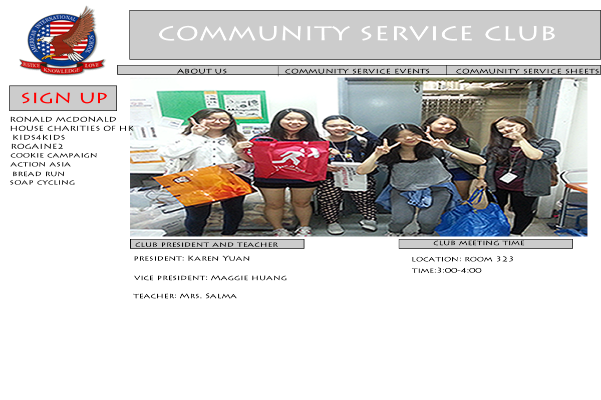
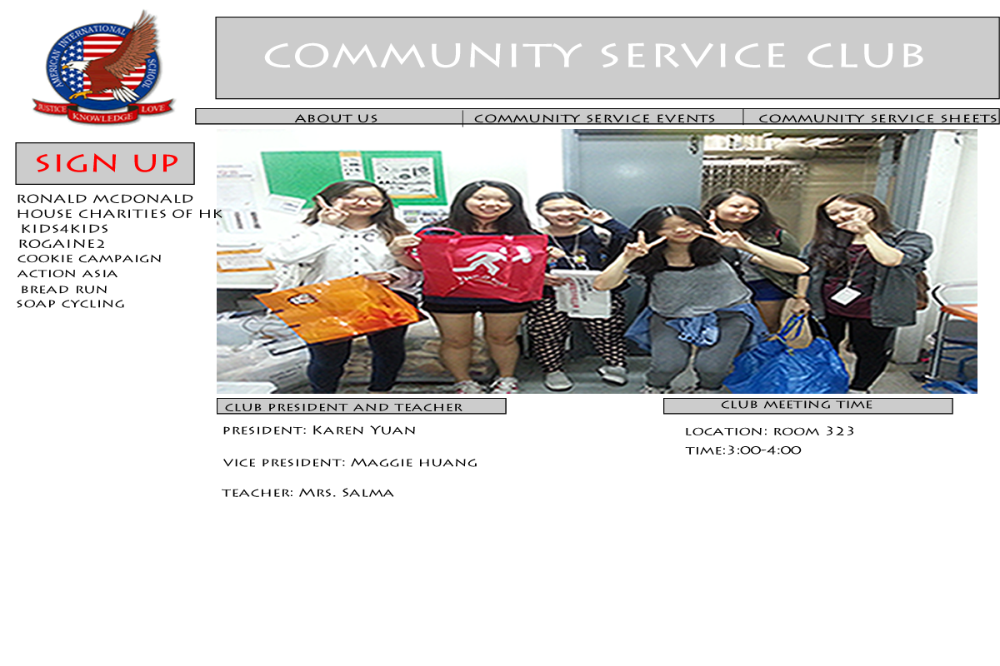

Objectives
For students who want to get involved in community service to sign up for CS events
For students who need information for coming up community service opportunitues.
let students sign up events on their own
Make easier to organize and keep track of the community service hours.
What problem are we trying to solve?
Since the the communty service club has not much time to do announce the events in assembly, we thought of trying to solve this problem - lack of advertisement/announcement
The members always need to find the students to join, instead of the students coming to us
AIS high school students
to announce new upcoming events to students
Mrs. Salma (The teacher in charge of the Community Service Club)
-To announce upcoming events
-Make easier for students to sign up
| Objectives | Success Criterias | Completed/Incompleted |
| For students to sign up CS students | Sign up form exists | In process |
| For students to access the upcoming events easily | List of upcoming events exists and can easily view it. | In process |
| For students to contact the club members easily. | Contact list exist in webpage | In process |
| Story/Problems | Solutions | Completed |
| contact with client | talk with Mrs. Salma | COMPLETED |
| not enough time to announce upcoming community service | Make a webpage of the list of volunteer events | not started yet |
| WE have to find students who want to join for new events (instead of the students finding us...) | make spreadsheets for students to signup | not started yet |
| not good at keepng track of the community service of students | Put a sheet for service hours so students can get signed by the teacher and give it to the office | |
For AIS Clubs who are needing websites


zoomed in

zoomed in

zoomed in

link:https://www.lucidchart.com/documents/edit/4aa2ec1a-c58e-49ad-ad4c-8e39bbb8c96d


Idea 1

Idea 2

For this wireframe I tried to put the sign up button as the action button so I put it right in the middle so it is easier for students to see and so it is the first thing they see when they go into the website.
Idea 3

For the the third wireframe I did something similar as the second idea but I put more pictures on the bottom and replace some boxes.

.png) 
